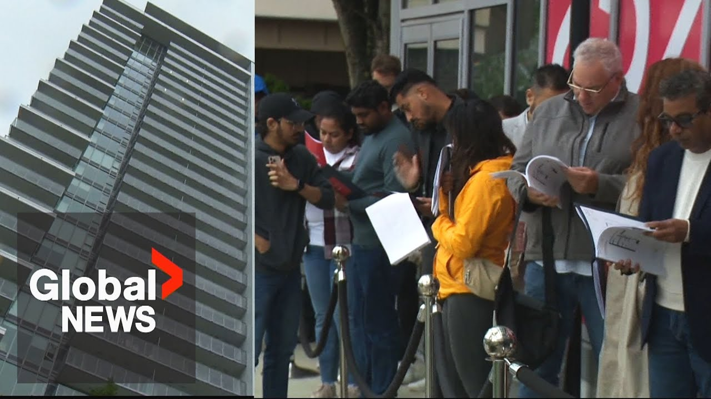

【数百人排队抢购BC省闪售公寓，折扣高达25%】
Summary: People waited overnight in the rain for a flash condo sale in Surrey, where units were discounted 25%. Many buyers were investors, though some sought their first home. Over 2,000 unsold condos remain in Metro Vancouver, prompting government action to prioritize affordable housing.
摘要： 人们在雨中通宵排队等待萨里的公寓闪售，折扣高达25%。许多买家是投资者，但也有人寻找首套房。大温地区仍有2000多套未售出公寓，政府正采取措施优先解决可负担住房问题。

⏱️ Estimated Reading Time: 3 min
📚 高考3500生词 📚 雅思生词 📚 托福生词 📚 GRE生词
Outside the Belvadier Presentation Center in Suri, people have spent a chilly wet night.
在萨里的Belvadier展示中心外，人们在寒冷潮湿的夜晚度过了一夜。
We've been in the lineup since last night at 8:00 trying to get first access for this.
我们从昨晚8点就开始排队，试图抢先获得这个机会。
In years past, we saw lines like this for condo pre-sales, but this one is different.
过去几年，我们见过类似的公寓预售排队，但这次不同。
These units were sold for full price.
这些单位曾以全价出售。
Now they're selling 25% lower after 3 years.
三年后，它们的售价降低了25%。
It's a really good deal.
这真是笔好买卖。
On Saturday, Square 9 Developments offered Condo Day, a flash sale offering 25% off movein ready concrete condos.
周六，Square 9 Developments推出了“公寓日”闪售活动，提供25%的现房混凝土公寓折扣。
My husband was telling me about it and we're interested in investing and Siri's booming at the moment.
我丈夫告诉我这件事，我们有兴趣投资，而且萨里目前正在蓬勃发展。
I think it's a good place to start.
我认为这是个不错的起点。
I'm looking for investment.
我正在寻找投资机会。
I have several in this area already.
我已经在该地区拥有多处房产。
700 suites were sold over the past 2 years while the building was under construction.
过去两年，在建期间已售出700套公寓。
The owners hope today's flash sale will quickly move the remaining 75.
业主希望今天的闪售能快速售出剩余的75套。
Condo day, I think, is going to be one of a number to come in the future, but uh I've been in real estate for over 20 years and I think this is an anomaly and I think it's going to be a lot of fun.
我认为“公寓日”将是未来众多活动之一，但我在房地产行业工作了20多年，认为这是个反常现象，而且会很有趣。
A recent report states that more than 2,000 new condos in Metro Vancouver are sitting unsold and empty and it could rise to 3,500 by the end of the year.
最近一份报告显示，大温地区有2000多套新公寓未售出且空置，到年底可能增至3500套。
Global reached out to BC Housing Minister Ravi Kalan who said in a statement, "What matters most is making sure people can find homes they can afford.
Global联系了BC省住房部长Ravi Kalan，他在声明中表示：“最重要的是确保人们能找到负担得起的住房。
That's why we've been pushing hard to get more housing built faster and making changes to stand up for renters and firsttime home buyers."
这就是为什么我们努力加快住房建设，并为租房者和首次购房者争取权益。”
The BC government also says it's taking steps to ensure housing is used as homes, not investments.
BC省政府还表示正在采取措施确保住房用于居住而非投资。
However, many of the people we met today say they were buying the suites to rent out.
然而，我们今天遇到的许多人表示他们购买公寓是为了出租。
One family in line is still looking to buy their first home.
排队的一家人仍在寻找他们的首套房。
In the Vancouver market, I think the the housing price is much higher than most people's salary and income.
我认为温哥华市场的房价远高于大多数人的薪资和收入。
The Steuart family managed to become one of the owners.
Steuart一家成功成为业主之一。
You go into the mall to see 25% off, but you're coming into a condo buying a condo or house instead for 25% off.
你去商场看到25%的折扣，但你是来以25%的折扣购买公寓或房子。
So, it's pretty neat.
所以，这很棒。
Julia Foy, Global News.
Julia Foy，Global News。